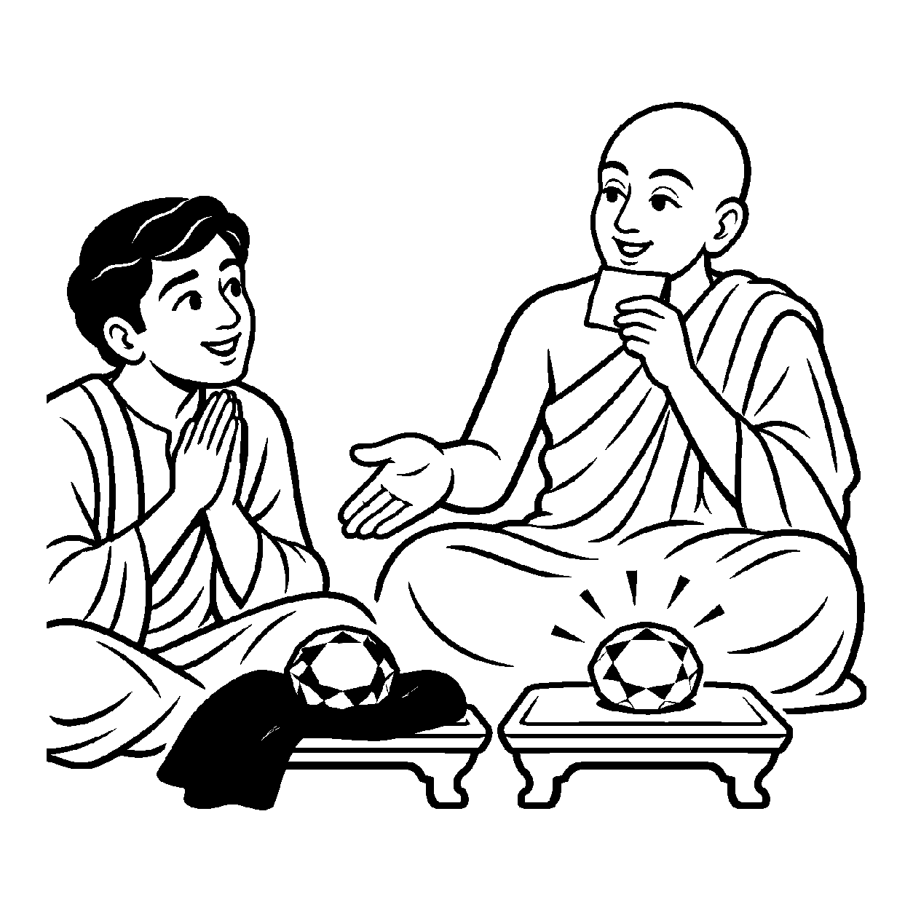

એક અત્યંત શુદ્ધ, નિર્મળ અને પારદર્શક સ્ફટિક મણિ છે. તેનો પોતાનો કોઈ લાલ રંગ નથી. પરંતુ જ્યારે તેની બરાબર પાછળ લાલ ગુલાબનું ફૂલ મૂકવામાં આવે છે, ત્યારે તે સ્ફટિક મણિ લાલ ગુલાબના સાંનિધ્યરૂપ ઉપાધિને કારણે લાલચોળ દેખાવા લાગે છે. જ્યાં સુધી ગુલાબનું સાંનિધ્ય છે, ત્યાં સુધી મણિ લાલ રંગે જ ભાસે છે. તેવી જ રીતે સંસારી આત્મા મૂળ સ્વભાવે શુદ્ધ હોવા છતાં, પૌદ્ગલિક કર્મોના ઉદય અને વિપાકના સાંનિધ્યરૂપ બાહ્ય ઉપાધિની સાપેક્ષતામાં આત્મા ક્રોધ, માન, માયા, લોભાદિ વિકારરૂપે પરિણમતો દેખાય છે, તે ઔપાધિક વિકારયુક્ત દ્રવ્યને ગ્રહણ કરવું તે 'ઉપાધિસાપેક્ષ અશુદ્ધ દ્રવ્યાર્થિકનય' કહેવાય છે.
આ નય બતાવે છે કે જીવમાં જે અશુદ્ધિ છે તે જીવનો મૂળ ત્રિકાળી સ્વભાવ નથી, પણ પર-ઉપાધિની અપેક્ષાએ જન્મેલી વિકૃતિ છે. જેમ સ્ફટિક મણિમાં લાલાશ ગુલાબને કારણે છે, તેમ આત્મામાં ક્રોધાદિ વિકાર કર્મ-વિપાકની ઉપાધિને આભારી છે. તેથી આ નય સંસારાવસ્થાના બંધન અને વિકૃતિના સાચા કારણને સમજાવે છે.
જો વિકાર આત્માનો મૂળ સ્વભાવ હોત તો તે ક્યારેય છૂટી ન શકત. આ નય ઉપાધિજન્ય વિકાર દર્શાવીને સાબિત કરે છે કે ઉપાધિ હટતાં જ આત્મા પુનઃ શુદ્ધ થઈ શકે છે!
સ્ફટિક મણિ રક્ત ભાસે, લાલ ફૂલના સંગ;
ઉપાધિ સાપેક્ષ નય વદે, કર્મે ચડ્યો રંગ.
પર ઉપાધિથી વિકૃતિ, આતમ મૂળ ન દોષ;
ઉપાધિ વિખરાતાં મળે, પરમ શાંત સંતોષ.
જ્યારે પુરુષાર્થ સાથે વિવેકપૂર્વક જોડાય છે, ત્યારે સાધક ઉપાધિના પ્રભાવને ઓળખીને ધ્યાન અને તપ દ્વારા કર્મોપાધિનો નાશ કરી મુક્તિ પામે છે.

ધર્મક્ષેત્રના એક વિચારશીલ યુવાન સાધક અમૃતલાલના મનમાં એક ભારે દ્વિધા જાગી હતી: "જો આત્મા અનંતકાળથી અશુદ્ધ છે અને સંસારમાં ભટકે છે, તો શું આ અશુદ્ધિ આત્માનો કાયમી સ્વભાવ નથી? જો ક્રોધ, માન, માયા અને લોભ આત્માનો જ સ્વભાવ હોય, તો તે ક્યારેય કેવી રીતે છૂટી શકે? અને જો એ સ્વભાવ ન હોય તો પછી શાસ્ત્રો કેમ કહે છે કે જીવ રાગી અને દ્વેષી છે?" આ પ્રશ્ને અમૃતલાલને ભારે અસમંજસમાં મૂકી દીધા હતા. તેમને મુક્તિની શક્યતા પર જ શંકા થવા લાગી હતી.
તે જ સમયે સંઘના પ્રખર અધ્યાત્મવેત્તા મુનિરાજે અમૃતલાલને એક પ્રયોગ બતાવ્યો. મુનિશ્રીએ હાથમાં એક નિર્મળ સ્ફટિક મણિ રાખ્યો અને તેની નીચે ઘાટું લાલ રેશમી વસ્ત્ર મૂક્યું. સ્ફટિક મણિ તરત જ લાલચોળ દેખાવા લાગ્યો! મુનિશ્રીએ પૂછ્યું, "અમૃત, આ મણિ કેવો છે?" અમૃતલાલ બોલ્યા, "મહારાજ, આ મણિ લાલ છે." મુનિશ્રીએ તરત જ લાલ વસ્ત્ર ખસેડી લીધું. ક્ષણવારમાં સ્ફટિક મણિ ફરીથી દૂધ જેવો શ્વેત અને પારદર્શક થઈ ગયો! મુનિશ્રીએ પ્રેમથી કહ્યું, "અમૃત, ઉપાધિસાપેક્ષ અશુદ્ધ દ્રવ્યાર્થિકનય આ જ રહસ્ય સમજાવે છે! આત્માનો પોતાનો કોઈ વિભાવ નથી; આત્મા તો સ્ફટિક મણિ જેવો નિર્મળ છે. પરંતુ કર્મોદયરૂપ લાલ વસ્ત્રની ઉપાધિના સંગે તે વિકારી દેખાય છે. જ્યાં સુધી ઉપાધિ છે ત્યાં સુધી વિકાર છે, પરંતુ જ્ઞાન અને વૈરાગ્ય વડે જેવી ઉપાધિ દૂર થાય છે કે તરત જ આત્મા પોતાના મૂળ શુદ્ધ સ્વભાવમાં પ્રકાશી ઊઠે છે!" મુનિશ્રીના આ ઉપદેશનું પાન કરતાં જ અમૃતલાલનો તમામ સંશય છિન્નભિન્ન થઈ ગયો અને તેમનો આત્મવિશ્વાસ પુનઃ જાગૃત થયો.
જો આ નયને એકાંત માની લેવામાં આવે, તો જીવ પોતાના તમામ પાપો અને દોષોનો ટોપલો કર્મ માથે ઢોળી દઈને પુરુષાર્થહીન અને સ્વચ્છંદી બની જાય છે. આવી એકાંત જડતાથી જીવ વર્તમાન વ્યવહારિક સાધના અને કર્તવ્યોની ઉપેક્ષા કરી બેસે છે અને ક્રમિક પરિણામોને સુધાર્યા વિના અકાળે પૂર્ણતાના મિથ્યા સંતોષમાં રાચે છે.
આ નય જ્યારે પુરુષાર્થ સાથે વિવેકપૂર્વક જોડાય છે, ત્યારે સાધક ઉપાધિના પ્રભાવને ઓળખીને ધ્યાન અને તપ દ્વારા કર્મોપાધિનો નાશ કરી મુક્તિ પામે છે.